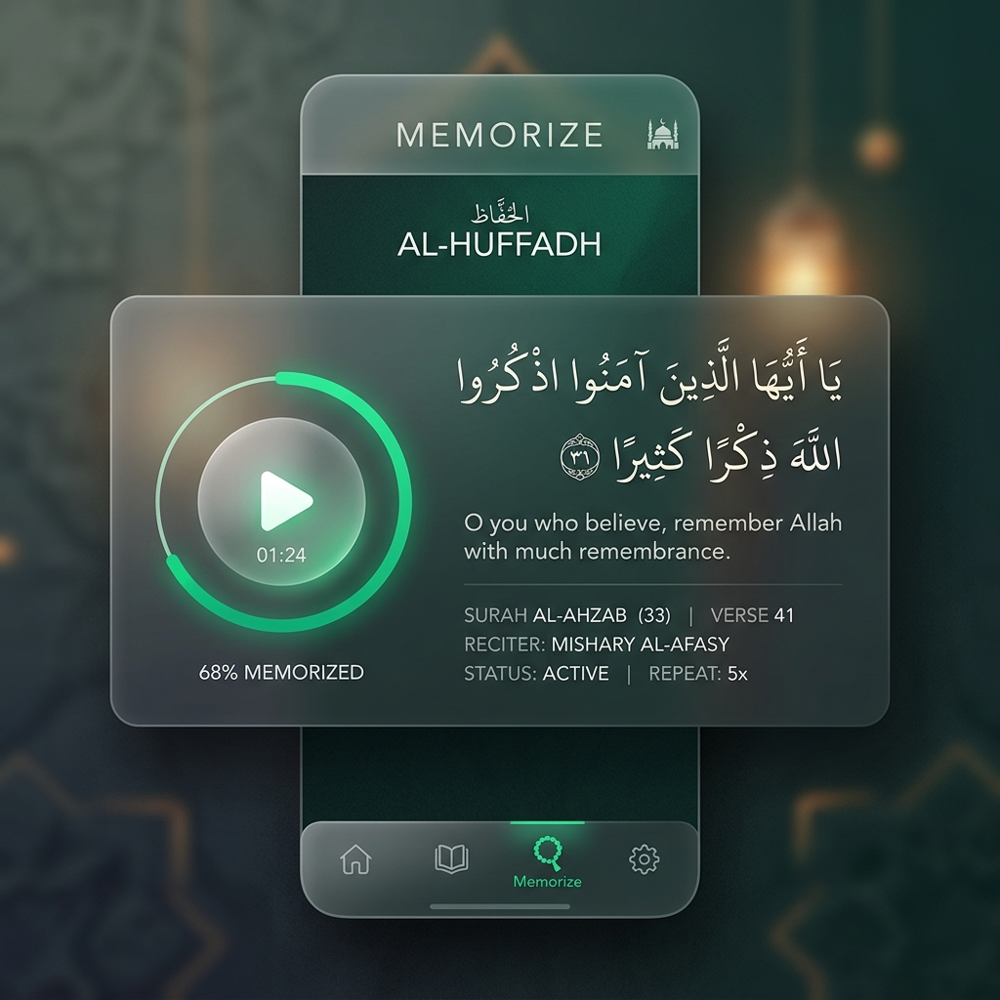
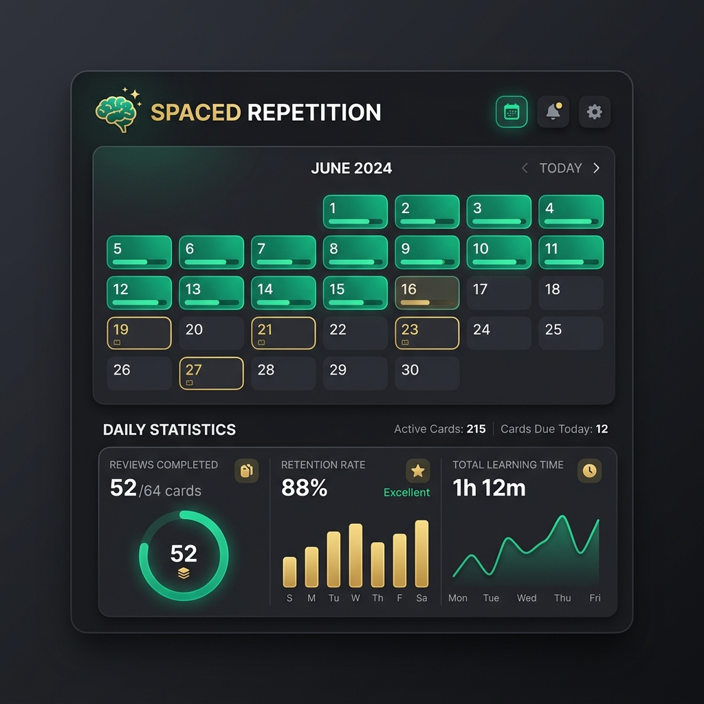
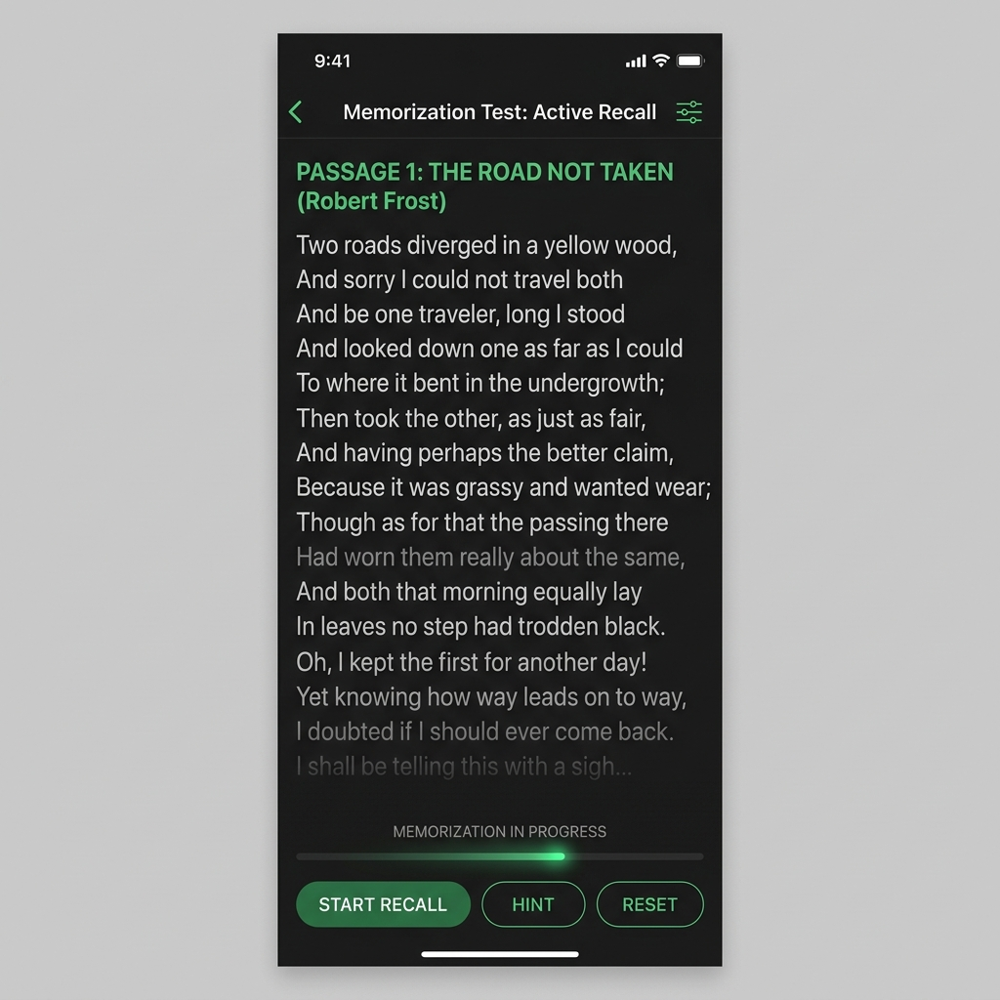
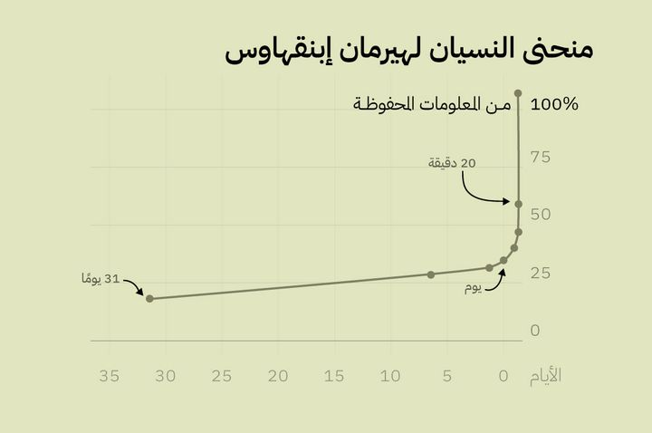

تطبيق محفوظ هو رفيقك الأمثل لحفظ القرآن الكريم والمتون العلمية بأساليب التعلّم الحديثة. يجمع بين المراجعة المتباعدة والتقييم الذكي ليجعل الحفظ راسخاً ولا يُنسى.
ابدأ رحلة الحفظ مجاناً
خوارزميات ذكية تحدد وقت مراجعتك بدقة لمنع النسيان. ستراجع ما أنت على وشك نسيانه فقط لتوفير وقتك وجهدك.
استمع للآيات بصوت مقرىك المفضل وكررها بالعدد الذي تريد، مع إمكانية التركيز على مقاطع معينة لضبط حفظك.
أداة جبارة لاختبار قوة حفظك. يقوم التطبيق بإخفاء الكلمات تدريجياً لتعتمد على ذاكرتك بشكل كامل أثناء الاسترجاع.
راقب تقدمك اليومي والأسبوعي عبر رسوم بيانية مريحة للعين تصنع بداخلك الحافز للاستمرارية في الحفظ والمراجعة.
لا تشغل بالك بالتخطيط للمراجعة؛ محفوظ يقوم بتنظيم وردك اليومي بالكامل. بفضل تقنية التكرار المتباعد (Spaced Repetition)، يعرض لك التطبيق الآيات والمتون في الوقت الذي تحتاج فيه لتذكرها بالضبط.

انتقل بحفظك من الاعتماد على النظر إلى قوة الذاكرة. وضع التلاشي يقوم بإخفاء أجزاء من النص المكتوب تدريجياً ليتيح لك تجربة استرجاع حقيقية وكأنك تقرأ من صدرك.

الأسس العلمية والعصبية لتطوير قدرات الذاكرة
الحفظُ ليس موهبةً يُولَد بها البعض دون غيرهم، بل هو مهارةٌ يمكن اكتسابها وتطويرها بفهم الآليات العلمية التي تحكمها. منذ قرن ونصف، بدأ العلماء في رسم خريطة دقيقة لكيفية تخزين الدماغ البشري للمعلومات واسترجاعها، وتكشف هذه الخريطة أن معظم ما نتعلمه يُفقَد بسبب غياب التكرار المنظَّم، لا بسبب ضعف الذاكرة في حد ذاتها.
"الذاكرة ليست وعاءً نملؤه، بل جذوةٌ نوقدها."
— بلوتارخفي عام 1885، أجرى العالم الألماني هيرمان إبينغهاوس على نفسه آلاف التجارب ليرصد أول قانون كمّي للنسيان. اكتشف أن الدماغ يفقد ما يقارب 50% من المعلومات الجديدة خلال ساعة واحدة فقط من التعلم، و70% منها خلال اليوم الأول، وما يصل إلى 90% خلال أسبوع — ما لم يتدخّل التكرار لإعادة تثبيت الأثر في الذاكرة.

💡 منحنى النسيان ليس قدَرًا. كل مراجعة ناجحة ترفع العتبة من جديد وتُبطئ معدل النسيان بشكل قابل للقياس.
يُوصف التكرار المتباعد (Spaced Repetition) بأنه أقوى تقنية تعليمية مدعومة بالأدلة العلمية في التاريخ. مبدؤه بسيط: مراجعة المادة في لحظات الذاكرة الحرجة — أي حين يكون الدماغ على وشك النسيان — يُجبره على بذل جهد استرجاع أعمق، مما يُنتج أثرًا عصبيًا أقوى في كل مرة.
حين يسترجع الدماغ معلومةً تحت ضغط النسيان الوشيك، يُنشئ اتصالات سينابسية جديدة بين الخلايا العصبية، ويُعزّز الشبكات القائمة. هذا ما يُعرف علميًا بـ"التعزيز طويل الأمد" (Long-Term Potentiation)، وهو الأساس الفيزيائي للذاكرة طويلة المدى.
يعتمد محفوظ على خوارزمية SM-2 التي طوّرها بيوتر ووزنياك عام 1987. تحسب هذه الخوارزمية الفترةَ المثلى للمراجعة التالية بناءً على مدى سهولة استرجاع كل بطاقة، مما يُخصّص جدول مراجعتك بدقة لكل متن على حدة.
يُفرّق علماء الأعصاب بين نوعَين من التكرار: التكرار السلبي (إعادة القراءة) والتكرار النشط (محاولة الاسترجاع دون النظر). الأبحاث تُجمع على أن الاسترجاع النشط أفضل بمراحل من إعادة القراءة، حتى لو فشلت في الاسترجاع أحيانًا — بل الفشلُ ذاته يُعمّق الأثر.
غطِّ النص وحاول استرجاعه كاملًا قبل الكشف. الجهد العقلي في اللحظة الصعبة هو ما يُرسّخ الحفظ.
اختبر نفسك قبل المراجعة، لا بعدها. الدماغ يُكوّن ذاكرة أقوى حين يبحث عن إجابة بدلًا من تلقّيها.
الأخطاء في الاختبار الذاتي ليست فشلًا، بل هي إشارات دقيقة تُحدّد بالضبط أين يحتاج دماغك إلى جهد إضافي.
الذاكرة ليست ملفًا واحدًا مُخزَّنًا في نقطة محددة من الدماغ، بل هي شبكة ديناميكية من الاتصالات السينابسية الموزّعة. فهم هذه البنية يُفسّر لماذا بعض تقنيات الحفظ تعمل وأخرى تفشل.
"المراجعة المتباعدة لا تُكرّر المعلومة فحسب، بل تُعيد بناء الشبكة العصبية التي تحملها في كل مرة، مما يجعل الذاكرة أكثر مقاومةً للنسيان."
— د. روبرت بيورك أستاذ علم الأعصاب المعرفي بالمعهد — جامعة كاليفورنيا، لوس أنجلوسمن القواعد الذهبية عند أهل العلم عدم تشتيت الذهن في دراسة عدة متون في وقت واحد. قال أئمة الشأن: «وفي ترادف العلوم المنع جا .... إن توأمان استبقى لم يخرجا». فمفتاح الحفظ الراسخ هو إفراد كل متن بالتركيز التام حتى الإتقان، وتصوّر مسائله تصوّرًا دقيقًا قبل الانتقال لغيره.
فيما يلي توصيات مُقطَّرة من أحدث أبحاث علم الأعصاب التعليمي وعلم النفس المعرفي:
الفترة المثلى للمراجعة الأولى هي بعد 24 ساعة من الحفظ.
درس قصير قبل النوم ونوم كافٍ (7-8 ساعات) يعزز التوطيد العصبي.
20-30 دقيقة من التكرار المركّز أفضل دماغيًا من ساعتين متواصلتين.
20 دقيقة من التمرين تحفز هرمونات تعزز نمو الخلايا العصبية لتقوية الذاكرة.
إعادة القراءة تُعطيك شعورًا بالألفة لا بالإتقان. اختبر نفسك دائمًا.
ربط كل متن جديد بمعلومة تعرفها مسبقًا يُضاعف قوة الترميز والاستذكار.
صُمِّم محفوظ منذ البداية على مبادئ علم الأعصاب التعليمي. خوارزمية التكرار المتباعد تُحسب لكل متن على حدة، وتقنية التلاشي التدريجي للنص تُجبر دماغك على الاستدعاء النشط بدلًا من القراءة السلبية، فيما تُحدّد المراجعة اليومية لحظة المراجعة المثلى بدقة علمية.
انضم لآلاف المنتفعين الذين جعلوا محفوظ رفيقهم اليومي والمتواصل في رحلتهم لحفظ كتاب الله ومتون العلم.